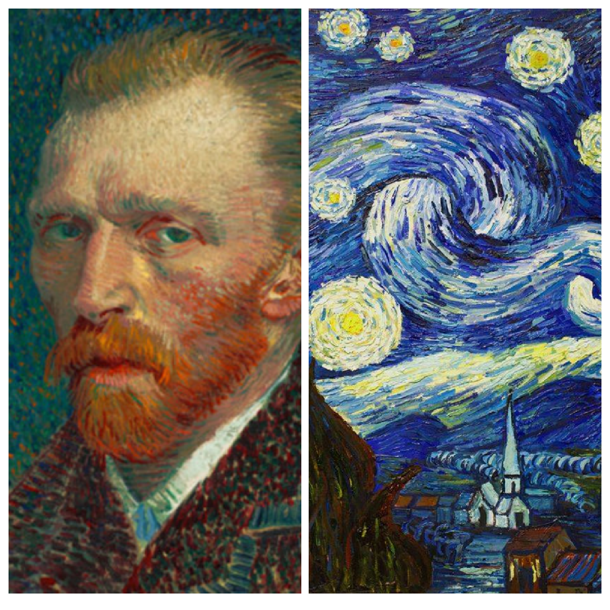

| OM SITEN | Leonardo | Pablo | Vincent |


Vincent van gogh
Vincent Willem van Gogh, född 30 mars 1853 i Zundert i Noord-Brabant, död 29 juli 1890 i Auvers-sur-Oise i Val-d'Oise, var en nederländsk målare, tecknare och grafiker. Han tillhör den moderna konstens och expressionismens främsta föregångare.
Starry Night är förmodligen Van Goghs mest kända och mest kontroversiella målning.